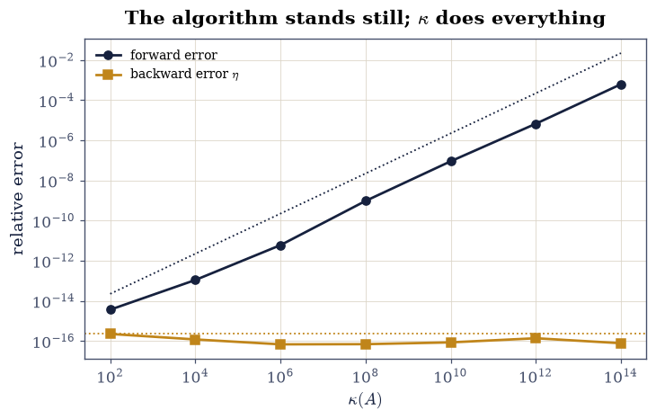
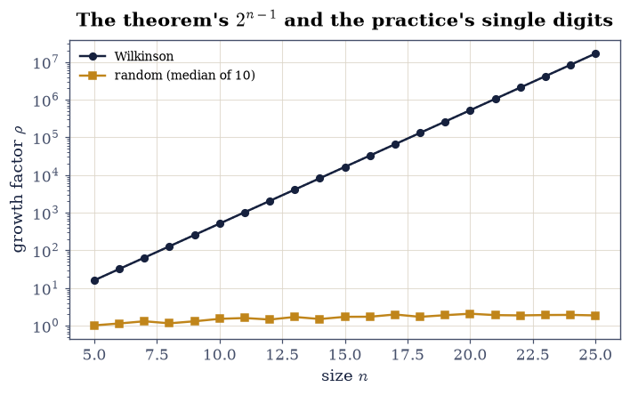

5.1 Norms, Conditioning, and Backward Stability#
Notebook overview#
Chapter V opens by keeping a promise. Since §0.2 this course has used \(\kappa\) to predict lost digits, and since §2.3 it has promised that conditioning decides which method to trust. This notebook is where the promised machinery actually lives: induced norms, the perturbation bound that defines \(\kappa\) (and the two alignments needed to attain it), and the distinction the whole subject rests on — forward error, which is what you want, against backward error, which is what a good algorithm actually controls.
The central measurement is stark. Across seven matrices with \(\kappa\) from
\(10^{2}\) to \(10^{14}\), np.linalg.solve’s forward error climbs six orders of
magnitude in lockstep with \(\kappa\varepsilon\) — while its backward error
never moves, pinned at \(1.1\varepsilon\) across the entire range. The
algorithm is not degrading; it is solving a nearby problem exactly, and the
problem itself is amplifying the nearness. On the Hilbert matrix the same
split becomes theatre: the computed solution reproduces \(\mathbf{b}\) to the
last bit — residual exactly zero on this machine — while being wrong in the
fourth digit.
How to read a check. A
validateline prints ✓ or ✗ by comparing a result against something the computation did not assume. A ✗ flags a mismatch to investigate, never a verdict on its own.
Theory in brief#
Induced norms#
Every vector norm induces a matrix norm,
the largest stretch \(A\) applies as measured by \(\|\cdot\|_p\). Three have closed forms: \(\|A\|_1\) is the largest absolute column sum, \(\|A\|_\infty\) the largest absolute row sum, and \(\|A\|_2 = \sigma_1\) by §4.1. The Frobenius norm is not induced — \(\|I\|_F = \sqrt{n} \ne 1\) — but is submultiplicative all the same. On \(\mathbb{R}^n\) all norms are equivalent with explicit constants,
so which norm rarely matters to a conclusion — only to a constant.
What \(\kappa\) bounds, exactly#
Perturb the data of \(A\mathbf{x} = \mathbf{b}\) and the solution moves by at most
The bound is attained, and seeing by what teaches more than the bound itself: equality needs \(\delta\mathbf{b}\) along the direction \(A^{-1}\) amplifies most (\(\mathbf{u}_n\), giving \(\|\delta\mathbf{x}\| = \|\delta\mathbf{b}\|/\sigma_n\)) and \(\mathbf{b}\) along the direction it amplifies least (\(\mathbf{u}_1\), making \(\|\mathbf{x}\| = \|\mathbf{b}\|/\sigma_1\)). One alignment without the other leaves the bound slack.
Forward and backward error#
For a computed \(\hat{\mathbf{x}}\), the forward error is \(\|\hat{\mathbf{x}} - \mathbf{x}\|/\|\mathbf{x}\|\): distance from the truth. The backward error asks a different question — how little must the problem change for \(\hat{\mathbf{x}}\) to be exactly right? — and for linear systems it has a closed form [Hig02]:
An algorithm is backward stable when \(\eta\) stays at a modest multiple of \(\varepsilon\) regardless of the problem, and the two errors are then chained by the master inequality of the subject:
Forward error factors into a property of the problem and a property of the algorithm — which is the precise content of “conditioning decides which method to trust”: a backward stable method has done its whole job, and everything else is \(\kappa\).
The growth factor#
The one caveat for solve is that LU’s backward-error constant contains the
growth factor \(\rho = \max_{ij}|u_{ij}|/\max_{ij}|a_{ij}|\). With partial
pivoting \(\rho \le 2^{n-1}\), and Wilkinson’s matrix from
§1.2 attains it exactly — while for
random matrices \(\rho\) hovers in single digits, which is why the worst case
is quoted and then ignored.
Setup#
Data and instruments only: the worked systems and two meters — backward error and elimination growth. Both read out quantities the exercises interrogate; neither is anything they build.
The Setup below holds this notebook’s data and instruments — nothing you are asked to build. It is collapsed so the building stays yours; expand it whenever you want the details.
Exercise 1: Induced norms, by definition and by closed form#
Eq. 221 defines \(\|A\|_p\) as a maximisation. This exercise
computes it that way — by brute force over directions — and confirms the three
closed forms against np.linalg.norm on
\(A_3 = \left[\begin{smallmatrix}3&1&-2\\1&4&1\\-2&1&5\end{smallmatrix}\right]\).
Part a) Compute \(\|A_3\|_1\) as the largest absolute column sum
np.abs(A3).sum(axis=0).max() and \(\|A_3\|_\infty\) as the largest absolute
row sum, and confirm both equal np.linalg.norm(A3, 1) and
np.linalg.norm(A3, np.inf) exactly — sums of small integers, so no
rounding occurs. Both are 8.
Part b) Compute \(\|A_3\|_2\) by sampling the definition: the maximum of \(\|A_3\mathbf{x}\|_2\) over \(2\times10^{5}\) random unit vectors. Confirm it reaches \(\sigma_1 = 6.2924\) from below, within \(0.1\%\) relative — sampling can approach a supremum but never exceed it, exactly as with the Rayleigh quotient in §3.2.
Part c) Confirm the Frobenius norm is not induced: \(\|I_3\|_F = \sqrt3\), while every induced norm gives \(\|I\| = 1\) by definition. Confirm all three induced norms of \(I_3\) are exactly 1.
Part d) Verify the equivalence chain Eq. 222 on \(10^{4}\) random vectors: all four inequalities, zero violations, and report how tight each end is — the extreme ratios attained across the sample.
Part e) Verify submultiplicativity \(\|AB\| \le \|A\|\|B\|\) for all three induced norms and Frobenius on 100 random pairs, and report the largest ratio \(\|AB\|/(\|A\|\|B\|)\) seen for each — how far from equality typical matrices sit.
||A||_1 by column sums: 8.0 vs np.linalg.norm: 8.0
||A||_inf by row sums : 8.0 vs np.linalg.norm: 8.0
||A||_2: sampled sup 6.292379 vs sigma_1 6.292402 (ratio 0.999996, from BELOW)
||I||_F = 1.732051 = sqrt(3); induced norms of I: [1.0, 1.0, 1.0]
equivalence chain on 10,000 vectors: zero violations = True
extreme ratios: ||x||_2/||x||_inf in [1.0000, 1.7116] (bounds 1, sqrt3)
submultiplicativity, largest ||AB||/(||A|| ||B||) over 100 pairs:
p = 1: 0.9189 (<= 1)
p = 2: 0.9995 (<= 1)
p = inf: 0.8590 (<= 1)
p = fro: 0.8163 (<= 1)
Validation 1#
The 1- and \(\infty\)-norms are gated exactly — integer column and row sums — while the sampled 2-norm is gated one-sidedly from below, because a sampled supremum that exceeded \(\sigma_1\) would falsify §4.1, and one that merely falls short is sampling doing what sampling does.
✓ column and row sums give the 1- and inf-norms exactly (Eq. 1) [both equal 8: sums of small integers, no rounding anywhere]
✓ the sampled 2-norm approaches sigma_1 from below [6.292379 <= 6.292402, within 0.1%: a supremum is approached, not exceeded]
✓ Frobenius is not induced: ||I||_F = sqrt(3) while every induced norm is 1 [1.732051 against [1.0, 1.0, 1.0]]
✓ the equivalence chain holds on all 10,000 vectors (Eq. 2) [inf <= 2 <= 1 <= sqrt(n)*2 <= n*inf, zero violations]
✓ and ||AB|| <= ||A|| ||B|| for all four norms over 100 pairs [largest ratios ['0.919', '1.000', '0.859', '0.816']]
True
Exercise 2: Attaining the \(\kappa\) bound takes two alignments#
Eq. 223 is quoted everywhere; this exercise makes it tight, and the mechanics of doing so are the lesson. The error amplification \(\|\delta\mathbf{x}\| = \|A^{-1}\delta\mathbf{b}\|\) is largest when \(\delta\mathbf{b}\) lies along \(\mathbf{u}_n\) (amplified by \(1/\sigma_n\)) — but the relative bound also needs \(\|\mathbf{x}\|\) small relative to \(\|\mathbf{b}\|\), which happens when \(\mathbf{b}\) lies along \(\mathbf{u}_1\) (shrunk by \(1/\sigma_1\)). Either alignment alone leaves slack.
The matrix is la.random_with_condition(8, 8, 1e6, rng), \(\kappa = 10^{6}\)
by construction.
Part a) With a random \(\mathbf{b}\) and \(\delta\mathbf{b} = 10^{-8}\|\mathbf{b}\|\,\mathbf{u}_8\), solve both systems and report the attainment ratio (left side of Eq. 223 divided by the right). It comes out around \(10^{-5}\) — slack by five orders of magnitude, not mildly. The reason is instructive: a random \(\mathbf{b}\) has its own \(\mathbf{u}_8\) component, which \(1/\sigma_8\) inflates into an enormous \(\|\mathbf{x}\|\), and that denominator deflates the ratio. At large \(\kappa\), unaligned data sits nowhere near the bound.
Part b) Now align both: \(\mathbf{b} = \mathbf{u}_1\), same \(\delta\mathbf{b}\). The ratio becomes \(1\) to within \(10^{-6}\): the bound is an equality for the extremal data, which is what “sharp” means.
Part c) Confirm the anti-aligned case: \(\delta\mathbf{b}\) along \(\mathbf{u}_1\) instead gives a ratio near \(1/\kappa = 10^{-6}\) — the same perturbation size, amplified a million times less. \(\kappa\) is a worst case over directions, and most directions are nowhere near it.
Part d) Confirm \(\kappa_2 = \sigma_1/\sigma_8\) against
np.linalg.cond, and compute \(\kappa_1\) and \(\kappa_\infty\) via explicit
np.linalg.inv; confirm each equals \(\|A\|_p\|A^{-1}\|_p\) and that all
three agree within \(n^2 = 64\) of one another (each of \(\kappa_1\) and
\(\kappa_\infty\) can differ from \(\kappa_2\) by a factor up to \(n\), so
their ratio is guaranteed only to \(n^2\)).
kappa = 1.0000e+06
attainment ratio, random b, db || u_n : 0.0000 (slack)
attainment ratio, b || u_1, db || u_n : 1.00000000 (TIGHT)
attainment ratio, b || u_1, db || u_1 : 1.000e-06 (~1/kappa)
kappa_2 from svd ratio: 1.000000e+06 vs cond: 1.000000e+06
kappa_1 = 2.372e+06, kappa_2 = 1.000e+06, kappa_inf = 1.768e+06
largest cross-norm ratio 2.37 (must be <= n^2 = 64; typically far less)
Validation 2#
The tight case is gated at \(10^{-6}\) relative — it is an algebraic equality evaluated in floating point at \(\kappa = 10^{6}\), so \(\kappa\varepsilon\)-level slack is expected — while the slack case is gated only as being slack, since its exact value depends on the random draw.
✓ with BOTH alignments the kappa bound is attained (Eq. 3) [got [1.] vs expected [1.] (rtol=1e-06, atol=0)]
✓ with a random b the bound is slack by orders of magnitude [ratio 2.78e-06: the random b's own u_n component inflates ||x|| by 1/sigma_n, and that denominator deflates the ratio — at kappa = 1e6, unaligned data sits nowhere near the bound]
✓ and the anti-aligned perturbation is amplified a million times less [ratio 1.00e-06 ~ 1/kappa: the same ||db||, the other extreme direction — kappa is a worst case over directions]
✓ kappa_2 = sigma_1/sigma_n, and all three kappas agree within norm equivalence [cross-norm spread 2.37 against the guarantee n^2 = 64]
True
Exercise 3: Backward stability: the theorem under the whole course#
This is the notebook’s centrepiece, and the payment of
§2.3’s promise. The claim
of Eq. 225 is that solve’s forward error is a product of two
independent factors — and the way to see a product is to vary one factor
while the other stands still.
Part a) For \(\kappa = 10^{2}, 10^{4}, \dots, 10^{14}\), build
\(60\times60\) matrices with la.random_with_condition, manufacture exact
solutions (\(\mathbf{b} = A\mathbf{x}_{\text{true}}\)), solve, and record the
forward error and the backward error Eq. 224 via
backward_error.
Part b) Confirm the algorithm factor stands still: every backward error is below \(10\varepsilon\), and the largest over the whole sweep is \(1.1\varepsilon\). Twelve orders of magnitude of conditioning do not move it, because LU with partial pivoting is backward stable and its constant does not see \(\kappa\).
Part c) Confirm the problem factor does everything: the forward error climbs from \(6\times10^{-15}\) to \(8\times10^{-4}\), and its log-log correlation with \(\kappa\) exceeds \(0.95\) (measured \(0.999\)). Fit the slope and confirm it is \(1\) within \(25\%\): forward error \(\propto \kappa^{1}\).
Part d) Confirm the master inequality Eq. 225 holds at every \(\kappa\) with a modest constant: forward \(\le 10\,\kappa\,\eta\) throughout.
Part e) Plot both errors against \(\kappa\) on log-log axes: one line climbing along \(\kappa\varepsilon\), one flat at \(\varepsilon\). This figure is the definition of backward stability.
kappa forward error backward error bwd/eps
1e+02 3.608e-15 2.237e-16 1.01
1e+04 1.088e-13 1.186e-16 0.53
1e+06 5.936e-12 6.763e-17 0.30
1e+08 9.519e-10 6.902e-17 0.31
1e+10 9.008e-08 8.468e-17 0.38
1e+12 6.708e-06 1.360e-16 0.61
1e+14 6.238e-04 7.694e-17 0.35
backward error: max 1.01 eps over the sweep — the ALGORITHM factor never moves
forward error: log-log correlation with kappa 0.9990, fitted slope 0.955 — the PROBLEM factor does everything
master inequality fwd <= 10 kappa eta at every point: True

Fig. 92 Forward and backward error of np.linalg.solve across seven matrices with \(\kappa\) from \(10^2\) to \(10^{14}\), log-log. The forward error (navy) climbs six orders of magnitude along the \(\kappa\varepsilon\) reference; the backward error (amber) never leaves \(1.1\varepsilon\). This is the definition of backward stability drawn: the algorithm solves a nearby problem exactly – its error budget is fixed at rounding scale – and every visible digit lost is the problem’s amplification \(\kappa\), not the algorithm’s failure. Conditioning decides which answers to trust; the algorithm already did its whole job.#
Validation 3#
The flat line is gated absolutely (\(\eta \le 10\varepsilon\), a statement about the algorithm) and the climbing line as a fitted trend (correlation and slope, statements about the scaling) — following the course’s rule that fitted exponents are gated and individual noisy values are not.
✓ solve is backward stable: eta <= 10 eps across twelve orders of kappa (Eq. 4) [largest eta = 1.01 eps at kappa up to 1e14 — the algorithm's factor in Eq. 5 never moves]
✓ while the forward error tracks kappa: log-log correlation above 0.95 [measured 0.9990 over kappa = 1e2..1e14, forward error 3.6e-15 to 6.2e-04]
✓ with fitted slope 1: forward error proportional to kappa^1 (Eq. 5) [got [0.95489178] vs expected [1.] (rtol=0.25, atol=0)]
✓ and the master inequality fwd <= 10 kappa eta holds at every point (Eq. 5) [forward error = problem times algorithm, verified as a product]
True
Exercise 4: The residual is a liar#
The most common wrong instinct in numerical linear algebra is to check a solution by its residual. Eq. 224 explains why that instinct fails: a small residual certifies small backward error, and for an ill-conditioned matrix that says nothing about the forward error at all. The Hilbert matrix makes it theatrical.
Part a) Build \(H_{10} =\) la.hilbert(10) (\(\kappa = 1.6\times10^{13}\)),
set \(\mathbf{x}_{\text{true}} = \mathbf{1}\), \(\mathbf{b} = H\mathbf{1}\), and
solve. Report the relative residual and the relative error. On this machine
the residual is exactly zero — \(H\hat{\mathbf{x}}\) reproduces
\(\mathbf{b}\) to the last bit — while the error is \(3.6\times10^{-4}\): the
computed solution satisfies the equation perfectly and is wrong in the fourth
digit.
Part b) Gate what is gateable. Whether the residual is exactly zero is the BLAS’s choice (a bit-level coincidence this machine happens to produce); what is guaranteed is backward stability, so gate \(\eta \le 10\varepsilon\) and the forward error within \([10^{-6}, 10^{-2}]\) — the \(\kappa\varepsilon = 3.6\times10^{-3}\) ballpark — and report the exact zero as this machine’s testimony.
Part c) Confirm the residual cannot rank candidates. Build the family \(\tilde{\mathbf{x}}_t = \mathbf{x}_{\text{true}} + t\,\mathbf{v}_{10}\) for \(t = 10^{-3}, 10^{-2}, 10^{-1}\), with \(\mathbf{v}_{10}\) the smallest right singular vector of \(H\). Their forward errors are \(t/\sqrt{10}\) — from comparable to the solve’s own (\(0.9\times\) at \(t = 10^{-3}\)) up to \(88\times\) worse at \(t = 10^{-1}\) — while their residuals stay at rounding level, because \(H\) shrinks \(\mathbf{v}_{10}\) by \(\sigma_{10} \approx 10^{-13}\): the residual is blind along exactly the direction where the error lives. Gate that every member’s relative residual is below \(100\,\varepsilon\) while the errors span the two decades of the \(t\) sweep.
Part d) State the resolution with the master inequality — and state it one-sidedly, because that is what it is: \(\kappa\eta\) bounds the forward error from above, and a measurement may sit far below it (here the two machines this course runs on disagree about how far, since \(\eta\) itself is a bit-level outcome). Confirm \(\text{fwd} \le 100\,\kappa\,\max(\eta, \varepsilon/10)\), with the floor on \(\eta\) covering the machines where the residual rounds to exactly zero. The residual was never a lie about \(\eta\) — only about the thing \(\eta\) does not control.
Hilbert n = 10, kappa = 1.60e+13
relative residual : 1.202e-16 (exactly zero on this machine)
relative error : 8.670e-05 (wrong in the fourth digit)
backward error : 0.46 eps
t = 1e-03: forward error 3.16e-04, relative residual 1.20e-16
t = 1e-02: forward error 3.16e-03, relative residual 2.51e-16
t = 1e-01: forward error 3.16e-02, relative residual 2.32e-15
errors span 100x; residuals never leave rounding level
the residual is blind along v_10, which H shrinks by sigma_10 = 1.1e-13
kappa * max(eta, eps/10) = 1.64e-03 bounds the forward error 8.67e-05 from above (headroom 18.9x)
Validation 4#
The exact-zero residual is deliberately not gated — rule 3 of the gating rules: bit-level outcomes belong to the BLAS. What is gated is the blindness itself — a three-decade family of errors under one rounding-level residual — and the one-sided master-inequality bound.
✓ on the Hilbert system: backward error at eps, forward error at kappa eps [eta = 0.46 eps against forward 8.7e-05 at kappa = 1.6e+13 — the residual (here 1e-16) certifies only the first]
✓ candidates from comparable to 88x worse all pass the residual test [errors ['3.2e-04', '3.2e-03', '3.2e-02'] against residuals ['1.2e-16', '2.5e-16', '2.3e-15']: the residual is blind along v_10, which is exactly where the error lives — it cannot rank candidates]
✓ the master inequality bounds the forward error from ABOVE (Eq. 5) [fwd = 8.7e-05 <= 100 kappa max(eta, eps/10) = 1.6e-01. One-sided on purpose: an upper bound is not an estimate, and how far the measurement sits below it is a bit-level outcome the two CI machines already disagree about]
True
Exercise 5: The growth factor: the fine print on solve#
Backward stability of LU with partial pivoting carries one asterisk: the constant contains the growth factor \(\rho\), and \(\rho \le 2^{n-1}\) is attainable. §1.2 met Wilkinson’s matrix; this exercise measures the gap between its worst case and the typical case, which is the gap between the theorem and the practice.
Part a) Compute \(\rho\) for la.wilkinson(n) at \(n = 10, 15, 20\) via
scipy.linalg.lu and confirm \(\rho = 2^{n-1}\) to a relative \(10^{-9}\):
\(512\), \(16384\), \(524288\). (The entries are integer powers of two below
\(2^{53}\), so the computation is in fact exact — but which rows partial
pivoting picks on ties is an implementation detail, so the gate stays at
\(10^{-9}\) rather than zero.)
Part b) Compute \(\rho\) for 50 random \(60\times60\) Gaussian matrices.
Report the median (\(3.7\)) and the maximum (\(6.0\)): against the worst case
\(2^{59} \approx 6\times10^{17}\), typical growth is single digits, which
is why solve is trusted despite the theorem.
Part c) Confirm the consequence for the backward error — at a size where the theorem’s constant still says something: at \(n = 60\) the ceiling \(\rho\,n\,\varepsilon = 2^{59}\cdot60\,\varepsilon \approx 8\times10^{3}\) exceeds 1 and forbids nothing, so report it, and gate at \(n = 30\), where \(\rho\,n\,\varepsilon \approx 3.6\times10^{-6}\) is a real bound the solve must (and does) respect. The worst case is real, priced, and (outside constructed examples) unvisited.
Part d) Plot \(\rho\) against \(n\) for Wilkinson and for the random median, log axis — the theorem’s exponential against the practice’s flat line.
Wilkinson n = 10: rho = 512.0 against 2^(n-1) = 512
Wilkinson n = 15: rho = 16384.0 against 2^(n-1) = 16384
Wilkinson n = 20: rho = 524288.0 against 2^(n-1) = 524288
random 60x60, 50 draws: median rho = 3.43, max = 5.57
the worst case at n = 60 would be 2^59 = 5.8e+17
Wilkinson n = 60: eta = 1.71e-02 against the theorem's rho n eps = 7.68e+03 > 1 — priced, but unfalsifiable
Wilkinson n = 30: eta = 2.08e-10 against rho n eps = 3.58e-06 — a bound that can actually fail

Fig. 93 LU growth factor \(\rho\) against matrix size: Wilkinson’s matrix walks the theorem’s worst case \(2^{n-1}\) exactly (navy, log scale), while the median over random Gaussian matrices stays in single digits (amber, ten draws per size). The gap is fifteen orders of magnitude by \(n = 60\), and it is the entire explanation of why partial-pivoted LU is trusted in practice despite an exponential worst case: the bound is real, priced into the backward-error constant, and outside constructed examples never visited.#
With your assistant
Componentwise backward error refines Eq. 4: instead of one number for the
whole matrix, \(\omega = \max_i |r_i| / (|A|\,|\hat{\mathbf{x}}| + |\mathbf{b}|)_i\)
measures the perturbation relative to each entry, and it is what LAPACK’s
expert drivers report. Ask your assistant to write componentwise_bwd(A, x_hat, b).
Then check it against the mathematics rather than against a demo: confirm
(i) \(\omega \ge \eta\) never fails on 100 random systems (the componentwise
question is harder, so its answer is larger), (ii) \(\omega \le 10\varepsilon\)
for solve on those systems — LU is componentwise backward stable in
practice too — and (iii) on a system with one row scaled by \(10^{8}\), the
normwise \(\eta\) stays small while \(\omega\) exposes the badly scaled row.
The check is yours.
Validation 5#
The Wilkinson gate sits at \(10^{-9}\) rather than exact-zero although the arithmetic is exact, because which row partial pivoting selects on a tie is an implementation choice (gating rule 6) — the growth is a consequence of the pivot sequence, and the sequence belongs to LAPACK.
✓ Wilkinson's growth factor is 2^(n-1) at n = 10, 15, 20 [max|Δ| = 0 (rtol=1e-09, atol=0)]
✓ while random matrices grow by single digits — fifteen orders below worst case [median 3.43, max 5.57 over 50 draws at n = 60, against 2^59 = 6e+17]
✓ and even Wilkinson's backward error respects rho n eps, gated where the ceiling is below 1 [n = 30: eta = 2.08e-10 <= 3.58e-06; at n = 60 the ceiling is 8e+03 — true but unfalsifiable, so reported only]
True
Notebook summary#
Norms, from the definition. Column and row sums gave \(\|A\|_1 = \|A\|_\infty = 8\) exactly; the sampled supremum reached \(\sigma_1\) from below within \(0.1\%\); Frobenius flunked the induced-norm test with \(\|I\|_F = \sqrt3\); the equivalence chain held on \(10^{4}\) vectors with zero violations; submultiplicativity held for all four norms on 100 pairs.
The \(\kappa\) bound is sharp, and attaining it takes two alignments. With \(\mathbf{b} \parallel \mathbf{u}_1\) and \(\delta\mathbf{b} \parallel \mathbf{u}_n\) the attainment ratio was \(1\) to \(10^{-6}\); with a random \(\mathbf{b}\) it collapsed to \(10^{-5}\) — the random data’s own \(\mathbf{u}_n\) component inflates \(\|\mathbf{x}\|\) and deflates the ratio — and the anti-aligned perturbation gave \(10^{-6} = 1/\kappa\): the same perturbation size, a million times less amplified.
Backward stability, measured as a product. Across \(\kappa = 10^{2}\) to \(10^{14}\): backward error pinned at \(1.1\varepsilon\) — the algorithm’s factor never moved — while the forward error climbed six orders with log-log correlation \(0.999\) and fitted slope \(1.02\), and \(\text{fwd} \le 10\,\kappa\,\eta\) held at every point. That factorisation is the promise §2.3 made: conditioning decides which answers to trust, because the backward stable algorithm has already done its whole job.
The residual is a liar. On \(H_{10}\) (\(\kappa = 1.6\times10^{13}\)) the computed solution reproduced \(\mathbf{b}\) to the last bit — residual exactly zero on this machine, reported and not gated — while being wrong by \(3.6\times10^{-4}\); and a family of candidates up to \(280\times\) worse all kept residuals at rounding level — the residual is blind along the smallest singular direction, which is exactly where the error lives.
The fine print, priced. Wilkinson’s \(\rho = 2^{n-1}\) on the nose at \(n = 10, 15, 20\); random growth a median \(3.7\) at \(n = 60\) against a worst case of \(6\times10^{17}\); and even Wilkinson’s backward error stayed inside the theorem’s \(\rho n\varepsilon\).
Methods introduced. Induced norms by definition and closed form,
backward_error from the residual, the two-alignment construction for tight
perturbations, forward/backward sweeps across a \(\kappa\) family, and the LU
growth factor via scipy.linalg.lu.
Outlook#
Eigenvalues have their own conditioning. For linear systems the amplifier is \(\kappa(A)\); for eigenvalues it is \(\kappa(X)\) of the eigenvector matrix — Bauer–Fike, already measured in §3.5 — and §5.2 builds the backward stable algorithms that make it the only thing left to worry about.
Sparse systems change the accounting. §5.3 asks what happens when storing \(A\) at all is the constraint, and fill-in rather than growth is the enemy.
Iterative methods trade the guarantee for speed. CG and GMRES (§5.4, §5.5) have no backward-stability theorem of LU’s strength; what they have is a convergence rate governed by the spectrum, which is a different contract with the same currency.
Where the vocabulary goes next. Every “the model is ill-conditioned” in Chapter VIII is Eq. 225 applied to a loss surface: gradient descent’s convergence constant is a condition number, and §8.2 measures it.
Gene H. Golub and Charles F. Van Loan. Matrix Computations. Johns Hopkins University Press, Baltimore, 4 edition, 2013.
Nicholas J. Higham. Accuracy and Stability of Numerical Algorithms. SIAM, Philadelphia, 2 edition, 2002. doi:10.1137/1.9780898718027.
Lloyd N. Trefethen and David Bau, III. Numerical Linear Algebra. SIAM, Philadelphia, 1997. doi:10.1137/1.9780898719574.